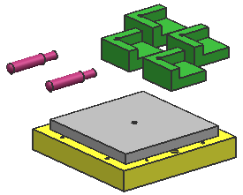
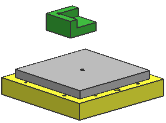

在视图中隐藏组件
-
在装配导航器中，查看各个组件的当前位置。
装配中含有两个 des03_tool_locator_pin 组件和四个 des03_tool_locator 组件，您将使用定位器中的一个来帮助您移动 des03_tool_workpiece 组件。

-
在装配导航器中，取消选择所有 des03_tool_locator_pin 组件节点，剩余一个 des03_tool_locator 组件节点。
des03_tool_assembly
des03_tool_locator_pin
des03_tool_locator_pin
des03_tool_locator
des03_tool_locator
des03_tool_locator
 des03_tool_locator des03_tool_workpiece des03_tool_baseplate
des03_tool_locator des03_tool_workpiece des03_tool_baseplate只有一个工具定位器显示在图形窗口中。
